| About Us | Special Thanks | Site Map |
|||||||||
| About Us | Special Thanks | Site Map |
|||||||||
 |
| 昨日と同じように６時頃に起床。 ひでくんは先に起きていて、外に写真を撮りにでかけました。 今朝はあいにくの曇り空です。 朝方雨が降ったのか、虹が出ていました。 |
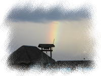 虹 |
|
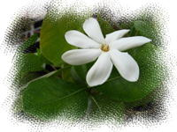 ティアレ |
朝７時頃、ひでくんがお散歩から戻ってきました。 ティアレタヒチのお花を一輪、おみやげにもってきてくれたので、 髪に飾りました。 白いワンピースに白いティアレの髪飾りがいいかんじ☆ |
| 今日はホテルボラボラチェックアウトの日。 １１時には、部屋を出ないといけません。 荷物もまとめておかないと。 |
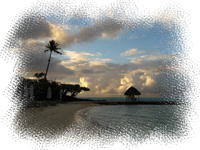 朝日に照らされる雲 |
| 今日の朝ごはんもフルーツ盛り。 ウェルカムフルーツは、おととい・昨日とたくさん食べたのに まだまだ残っていました。 全部カットしたら、お皿二皿に山盛りです。 やっぱり二日で全部食べるのは無謀なんでしょうか・・。 結局、二人で食べきりましたけどね。 |
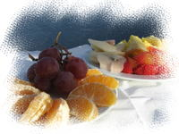 フルーツの朝食 |
|
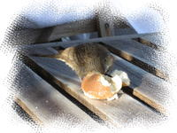 鳥さん再び |
昨日ルームサービスのランチに付いてきたフランスパンは、 食べようと思ったらアリの餌食になっちゃってました・・。 これは、鳥さんとお魚さんの餌付けに使いましょう。 テラスにやってきた鳥（昨日と同じ鳥かなあ？）に パンを手のひらにのせて出してみると、 警戒せずに寄ってきて、くちばしをつついて食べています。 丸ごと１個食べちゃいそうな勢いです。 |
| 雨雲が流れて、青空が見え始めたものの、 晴れたり曇ったりと不安定なお天気。 少し日が差してきたので、今がチャンスっ、と ふたりで最後の散歩＆写真撮影にでかけました。 |
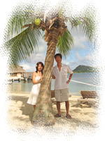 やしの木の下で |
ビーチをぶらぶら |
ビーチをぶらぶら歩きながら、記念撮影。 白いセイリングカヌー、ビーチの先にある屋根つきテーブル、 歴史を感じる大きな木。 もうお別れなんて。。もっとここにいた～い。 |
| 部屋に戻って、もうひとつ、やりたいことがありました。 テラスの階段でお魚さんと写真が撮りたいっ。 急いで水着に着替えます。 餌付け用のパンをもって、スタンバイ。 ところが、だんだん空の雲行きが怪しくなってきた。。小雨まで。。 天気が悪いと、お魚さんもコテージの下に隠れてしまうようで、 パンを投げても、出てきてくれません。。 出発までにもう一度、出てきて。。(￣人￣)おねがい～♪ |
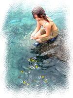 待望のお・さ・か・な・さん♪ |
祈りながら空の様子を眺めていると、念願の晴れ間が！ 今だっ、とカメラマンひでくんを呼び、 お魚を集めて記念撮影。 お魚も今度は出てきてくれました。(v^ー°) ヤッタネ |
| そうこうしているうちに、チェックアウトの時間がせまってきました。 荷物をまとめ、身支度を整えると、 ２日間お世話になったマイルームを見渡します。 ふかふかの天蓋付きベッド、海や夜空を眺めたテラス、そしてテラスから見える風景。 忘れないように、目に焼き付けておこう。。 |
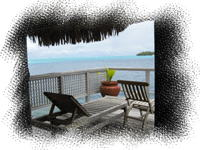 テラス |
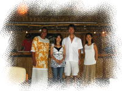 マミさんたちと一緒に |
１５分ほど時間を過ぎて、やっとポーターさんが部屋に荷物を取りに来ました。 そして、マミさんから 「ホテル移動の車が来ましたので、チェックアウトをお願いします」との電話が。 後ろ髪をひかれる思いで部屋を後にし、レセプションで、チェックアウトします。 おみやげにネックレスをもらい、 最後に、マミさんとタヒチアンのスタッフさんと４人で、写真を撮ってもらいました。 そして、迎えの車に乗り込み、出発です。 マミさんたちは、見えなくなるまでずっと、手をふってくれました。 |
| ホテルボラボラ、ほんとに素敵なホテルでした。 またいつか、ここに泊まれたらいいな。。 |
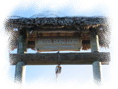 HOTEL BORABORA |
| ホテルボラボラを出て、車で５分くらいで、次のホテル 「インターコンチネンタル モアナリゾート」に到着です。 途中、フォトツアーで訪れたマティラビーチがあります。 |
||
| ホテルに到着すると、レセプションで ウェルカムドリンクが出され、チェックイン手続きをします。 あいにく今日は、日本人スタッフの方がタラソスパ（最近できた系列ホテル）のほうに 行っており、不在とのことです。（・・という旨が書かれた手紙を渡された） フランス人ぽいスタッフの方に、部屋まで案内されました。 途中、レストランや施設について説明があったのだけど、 英語だから細かいところはよくわかんないや・・。 |
| インターコンチは昨年高波の被害を受けており、 水上コテージの柱を高くする工事を先月まで行っていました。 工事終了が延び延びになっていたので、 私たちが泊まる頃に終わってるかな・・、とちょっと心配していましたが、 もうすっかり工事は終わっているようでした。 |
インターコンチの水上コテージ |
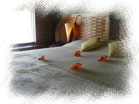 お花が飾られたベッド |
私たちのお部屋は、７６番のお部屋です。 長く延びているメインの水上バンガロー群ではなく、 マティラビーチに近いほうの小さい水上バンガロー群にあります。 マティラビーチ側は普通に民家エリアが見えてしまうので、 外観的には、メイン側のほうがよかったな～。 まあ、お部屋リクエストもしてないので仕方ないですね。 |
| お部屋は、新しくてきれいです。 リビングにはバンガローの下の海がのぞけるガラスのテーブルがあります。 ここを開けて、お魚にパンをあげることもできます。 ホテル全体も、洗練されたかんじで、さすが一流ホテルグループのリゾートホテル、 という印象です。 |
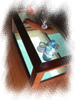 ガラステーブル |
| 部屋で一息ついたあと、おなかもすいてきたので 散歩がてらお昼ごはんを食べにいくことにしました。 向かうは、「スナックマティラ」。 口コミ情報によく載っていたスナック（軽食やさん）です。 |
「スナックマティラ」から見えるビーチ |
ホテル移動中の車で見かけたので、ホテルボラボラへ向かう途中の 道路沿いにあることは間違いない。 まあ、すぐ見つかるでしょう・・と、ビーチを通ったりして ぶらぶら探していたのですが、なかなか見つかりません。 そんなに遠くなかったと思うんだけど。。 途中で引き返してみますが見つからず、再びホテルボラボラのほうへ。 結局、思っていたよりも先（ホテボラに近い方）にありました。 |
| ここでは、マヒマヒバーガーとポワソンクリュをオーダー。 ヒナノビールを飲み、マティラビーチを眺めながらお昼ごはん。 マヒマヒバーガーは、マヒマヒ（白身の魚）を焼いてサンドしたもので、 付いてきたバーベキューソースをつけるとなかなかおいしいっ。 ポワソンクリュは、白身魚のココナッツソース和えサラダ？で、 思ったよりココナッツの香りはしなかったけど、レモンがかかってさっぱり味。 生ものがだめな私でも食べられました。 |
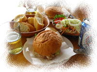 きょうの昼食 |
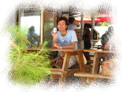 店内の様子 |
食べ終わる頃、雲行きが怪しくなり急にスコールが降り始めました。 あっという間に、ビーチ側の席はずぶぬれに。。 あわててテーブルを奥に移動しました。 今日は朝から天気がころころ変わります。この雨も、店を出る頃には止みました。 |
| 帰りは、ビーチ沿いをずっと歩いて戻りました。 パブリックビーチなので、地元の子供や、犬も海辺で遊んでいます。 ここはなんといっても、見渡す限りのコバルトブルーの海がほんとにきれいで すてきな場所です。 この海を毎日眺められるなんて、ここの子供がうらやましい。。 |
マティラビーチ散策 |
| 私たちも、負けずにこの海で泳ぐのだ～っ。 部屋に戻り、水着に着替えて再びマティラビーチへＧＯ！ 泳ぎ出して体が濡れる前に記念撮影、ということで、 「みっきぃグラビア撮影会」（仮称）が始まりました。 この日のためにダンナさまは、”オンナノコをきれいに撮りたいっ” とかいう見出しのついたカメラ雑誌を買ってきて、 アングルや撮り方など予習に励んでおりました。 （結局、役に立ったのだろうか・・） モデルはというと・・。予習、しておりません(^-^;。 （グラビア写真集とか買えないし～。。） 専属カメラマンのなすがままです。 どんなふうに撮られているのやら。。 |
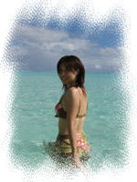 グラビア撮影会（？） |
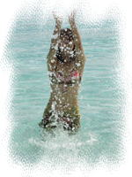 水しぶき（？） |
「じゃあ次、カメラに向かって水かけてみて～」 とカメラマンの指示。 カメラ目線で、「もうっ、お水かけちゃうぞっ♪」みたいな・・。 いかにも昔のグラビア風です。（今もやってるんでしょうか。。） これは恥ずかしい・・。 水しぶきをきれいにあげるのは意外と難しいということがわかりました。 ちょうど撮影の間、日差しがモウレツに強くなってきました。背中がチリチリします。。 がっちり日焼け止めを塗っていても、日焼けしてしまいます。南国の日差し、侮るなかれ。 日焼けオイルなんか塗っちゃだめです～。 |
| グラビア撮影を切り上げ、ラッシュガードを着て泳いでみます。 水がきれいで、底が透けて見えます。 ここは遠浅の海なので、沖に向かって泳いでもずっと足が付くくらいの深さです。 波も穏やかで、まるで果てしなく続く巨大なプールみたい・・。 沖のほうを向いてぷかぷか浮いていると、 なんだかこの広い世界を独り占めしたような気分になってしまいます。 |
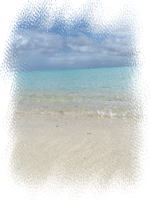 マティラビーチ |
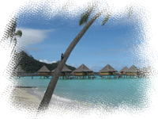 インターコンチのビーチ |
マティラビーチを満喫した私たち。 次はホテルのビーチに移動します。 マティラビーチとそう離れていないのに、海風が強い～。 こちらも一面、遠浅のコバルトブルーの海です。 水上バンガロー群や、ビーチのやしの木が絵になります。 ガイドブックに載っていたのはここの景色だあ～♪ ここにはどんなお魚さんがいるのでしょう？ いったん部屋に戻って、テラスからシュノーケリングにでかけます。 |
| テラスでシュノーケルセットを装着して、さあ海へ・・と思ったら、 テラスに置いていたグローブが、片一方ないっっ？？ 風が強くて、グローブが飛んでしまったようです。 きゃ～～、なくしちゃったら大変だ～～。 あわててグローブ捜索のために海に入ります。 既に海に入っていたひでくんも呼んで、一緒に捜索して 私たちのバンガローから、岸に向かって探していると、、・・・発見しました。 斜め後ろのバンガローの下を、ぷかぷか浮いていました。 よかった～～(´▽｀) ホッ。 |
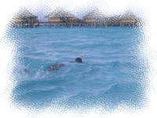 シュノーケリング |
気を取り直して、シュノーケル再開。 バンガローの下はとても浅いのだけど、 サンゴのまわりには、お魚が集まっていました。 ホテボラとはまた種類が違う魚で、ボラや細長いブルーのお魚（名前わからない・・） が多かったです。 沖の方へもいってみましたが、バンガロー下ほどお魚はいませんでした。 ところどころあるサンゴのまわりに少しいるくらいかな。 |
| 夕方５時頃、海から上がって海グッズ洗濯や片付けをしていると Megumiさんから電話がありました。 これからフォトツアー写真（CD-ROM）を届けにきてくれるそうです。 ６時に私たちのお部屋にきてもらうことにして、 いそいで身支度をしました。 |
 CD-ROMジャケット写真 |
６時過ぎ、Megumiさん・JeanLucさんご夫妻がお子さん（カワイイ♪）を 連れていらっしゃいました。 フォトツアー写真を、持参のパソコンで見せてもらいます。((((o゜▽゜)o))) ドキドキ おおっ～、とってもいいかんじ～～♪ 思ったより笑顔もこわばっていないし、自然でいい雰囲気に見えます。 （どこからみても☆ハネムーナー☆だ～い♪） ロケーションも素敵だし。。さすがプロのカメラマンさま。 |
| Megumiさんから、「写真の感想など、便箋にちょっと書いてもらえませんか？」 と依頼があったので、ホテルの便箋にお手紙を書きました。 ぶっつけだと、うまく言葉が出てきません。。 １度書き損じ、もう一枚に書き始めるもまた間違える。。 時間がかかってしまったけど、なんとか書き上げました。 あんまりキレイなお手紙じゃなくてごめんなさい。 この手紙をお店に飾るとのことでしたが、今頃飾られているのでしょうか。。 |
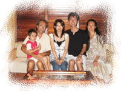 記念撮影！！ |
最後に、みんなで記念写真を撮らせていただきました。 おふたりにフォトツアーお願いして、ほんとによかったです。 私たちの一生の記念になりました。本当にありがとうございました！！ |
| だいぶおなかがすいてきたので、ホテルのレストランでディナーにしましょう。 インターコンチでは、朝食・夕食付きのプランなのですが、 夕食についてどのようになるのか、（どこまでが無料になるのか、など） チェックインのときも、部屋の案内にも説明はありません。 日本人スタッフの方はいないみたいだし。。不安です。 チェックインのときに渡された手紙には、 「何かあったら、フロントかアクティビティセンターから、 日本人スタッフに取り次いでもらい電話で話ができる」 と書いてあったので、電話で聞いてみようとフロントへ。 でも、スタッフは皆取り込み中のようで、しばらく空きそうにありません。 う～ん、困ったな。。 ひでくんは、「そんなに心配しなくても、なんとかなると思うけど」 と楽観的です。 そういうなら・・、と、不安ながらもレストランに行ってみることにします。 |
| レストランの入り口で、スタッフに恐る恐る、 「・・including dinner plan, OK?」（めちゃ片言・・） と言ってみると、ニッコリ笑って席に案内してくれました。 ちょっと安心して、渡されたメニューを見ると、 「？？？？」 メニューは、アラカルトのメニューで、１品ごとに値段が書いてあり、 下のほうに、以下の注意書きが。 日本語：滞在中にお食事プランをお持ちの方またはお選びの方は、 シェフお勧めのコースメニュー、または6974フランの金額で アラカルトメニューをお選びいただけます 英語 ：Clients on meal plan may select their menu with an allowence of 6947 CFP |
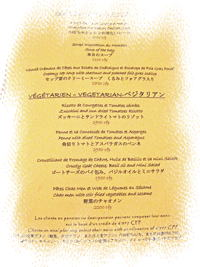 いわくつきのメニュー |
| これ、どう解釈する・・？ 渡されたメニューは、アラカルトメニューだよね？ ”6974フランの金額でお選びいただけます”って、 追加料金6974フランも取られるってことだったりして？？ なんか日本語説明は、英語説明の日本語訳ともちょっと違うし。 結局、夕食付きプランはどのメニューを頼めば無料なの？ わかんないよ～～（＞0＜） とまどっていると、ウェイトレスさんがメニューを聞きにやってきました。 |
| そこで、再び英語でチャレンジ。 「including dinner plan, This Menu OK?」（めちゃ片言・・） すると、メニューをめくりながら、 「・・Starters, Soup, Main dish, and Desserts select・・」 どうも、メニューから４品選べといってるみたいです。 結局、私たちが聞きたいことは聞けずじまい。。 もっと英語勉強しておけばよかった・・orz ウェイトレスさんがいってしまい、さて、オーダーどうしましょう。。 |
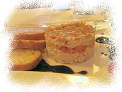 シーフードとパパイヤの リエッタ トマトチャツネー添え |
すると、ひでくんがひとこと、 「まあ最悪、全額とられることになるかもしれないけど仕方ないか」 と。 仕方ないって、、、まともに頼んだら、二人で２万はとんじゃうんだよ？？ というか、さっきの「なんとかなるさ」って、 「全額払えばいいじゃん」ってことなのかしら、ダンナさま・・。 家計を預かる妻としては、どうも納得がいきません。。 再びフロントへ問い合わせに行きたい衝動にかられましたが、 ここは一流ホテルのレストラン。ぐっとこらえました。 とりあえず、さっき指示された４品を選んでオーダーします。 |
| ◆ひでくんのセレクトメニュー ・シーフードとパパイヤのリエッタ トマトチャツネー添え 2800CFP ・本日のスープ 1100CFP ・チキンと海老のポリネシア風タジン 3100CFP ・チョコレートモエル 洋ナシのローストとバニラアイスクリーム 1500CFP ◆みきのセレクトメニュー ・海老の串焼き パイナップルチャツネとレモングラスソース 2630CFP ・かぼちゃとメロンの冷たいスープ 1100CFP ・チキンの胸肉のソテー マッシュルーム入りスウィートポテトのピューレとにんじんのソース添え 3100CFP ・タハア産バニラのクリームブリュレ 1500CFP |
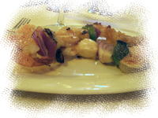 海老の串焼き パイナップルチャツネと レモングラスソース |
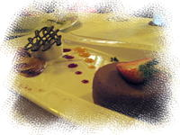 チョコレートモエル 洋ナシのローストと バニラアイスクリーム |
お味は、みんなすばらしい。。一流レストランのお味です。 海老は焼きすぎずプリプリだし、ひでくんオーダーのリエッタがなんともウマイ♪ 一皿のボリュームは、やっぱりすごいけども・・。 前菜でほぼおなかが落ち着いてしまい、 デザートにたどり着く頃には、もう入る余地がなくなってしまってます。 （半分ずつ残しても十分だったかな・・） こんなにおいしいデザートをおいしく味わえないなんて。。残してしまうなんて。。 一生の不覚です。単品でもう一度食べたい。。 |
| 会計といえば、部屋付けの伝票に食べた分の値段が合計されていました。 やっぱり全額払うことになるのかなあ。。 明日はちゃんと確認しよう。 |
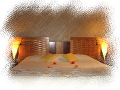 ライトアップされたベット |
初日の夜はというと・・。 おなかいっぱいで、苦しい・・。もう動けません。。 なんとかベッドルームで記念撮影すると、 胃薬を飲んで、早々就寝することにしました。 |
| 明日は、ボラボラディスカバリーのラグーン一周ツアーです。 |
Previous Day ( 2ndDay ) ｜ top ( 3rdDay ) ｜ Next Day ( 4thDay ) |